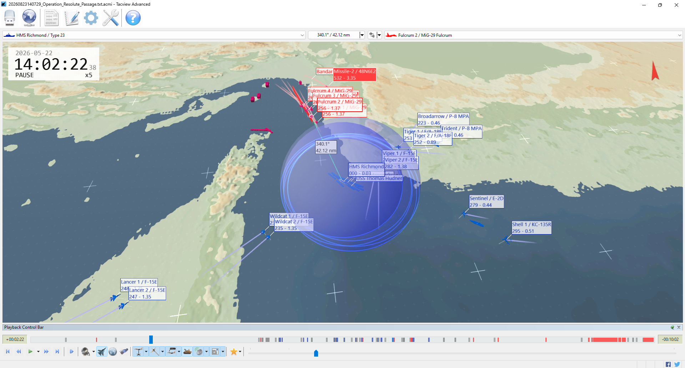
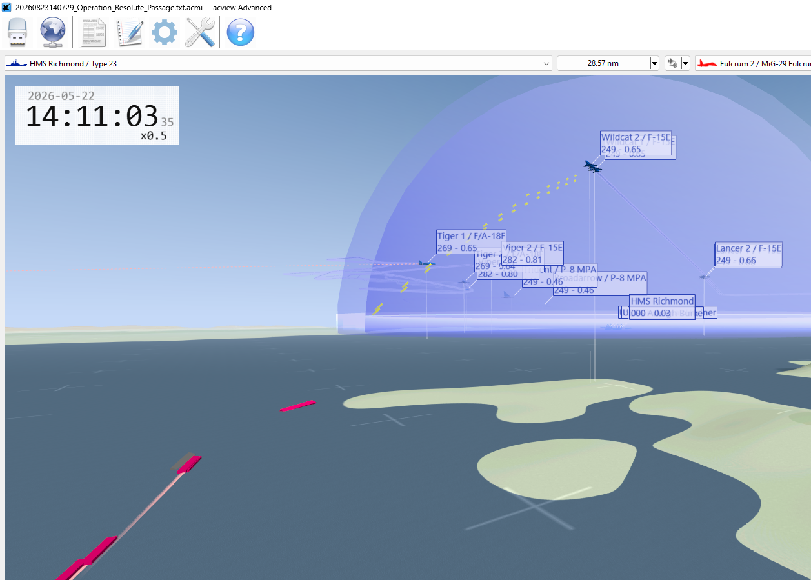

Command assessment
BLUE eliminated Iran's entire six-aircraft package before it could attack the convoy. The logistics force remained intact, but the strike plan never damaged the coastal network and Wildcat flight crossed into the gun envelope of surviving fast attack craft.
Air battle
Decisive BLUE victory. Four MiG-29s and two Su-24Ms destroyed.Convoy protection
Successful during the recorded action. All six auxiliaries survived.Surface objective
Passed by the game, but contaminated by probable navigation or collision losses.Overall mission
Not accomplished. Shore targets survived and transit remained incomplete.
14:02:22 RED's four Fulcrums and two Fencers are massed north of the Strait as a 48N6E2 crosses south from the Bandar Abbas area. Tiger and Viper form the forward air screen around the convoy; Wildcat holds southwest of the screen, Lancer remains farther south, and Sentinel and Shell 1 preserve support depth to the east. This geometry set the conditions for BLUE's complete destruction of the RED air package over the next five minutes.
Action in twelve minutes
The convoy moves west-northwest. S-300 Site North begins long-range engagements. Two Tsunami boats reach zero health without recorded weapon impacts.
Fencer 1 is destroyed after hits from Tiger 1 and Viper 1; Tiger 2 delivers the kill.
Viper 2 destroys Fencer 2. The anti-ship strike threat is eliminated.
Viper and Tiger flights destroy all four Fulcrums. RED's only R-73 shot misses Viper 1.
Four RED ships sink at virtually one coordinate without weapon attribution. Together with the Tsunamis, they satisfy the surface goal artificially.
Khanjar and Falakhon engage Wildcat flight with 76 mm fire. Wildcat 2 is destroyed; Wildcat 1 survives with about 62% health.
The game is saved. The convoy and coastal network are intact; one S-300 missile remains in flight. The resumed session adds no new combat result.

Later Tacview frame · 14:11:03
The loss of Wildcat 2
The frame catches the opening seconds of the FAC barrage. Curved yellow streams climb from the surface toward Wildcat 1 and Wildcat 2 while Tiger, Viper, Lancer, Broadarrow, and Trident remain visible across the wider air picture.
This was not a SAM or MiG kill—RED aviation was already gone. Wildcat 2 crossed close enough to Khanjar for high-angle 76 mm fire to reach it at roughly 7,600 metres altitude. Three rounds received damage credit. Wildcat 2 progressed from moderate to heavy damage and destruction; the crew ejected. Falakhon hit Wildcat 1 once during the same engagement.
Khanjar · Kaman FAC39 × 76 mm HE-MOM fired
▲ 10.6–14.8 KM SLANT RANGE
Wildcat 2 · F-15E~7,599 m · destroyed · ejection reported
Falakhon · Kaman FAC24 × 76 mm HE-MOM fired
▲ 15.4 KM SLANT RANGE
Wildcat 1 · F-15E~7,599 m · 62% health remaining
Combat ledger
| Side | Unit | Result | Attribution |
|---|---|---|---|
| BLUE | Wildcat 2 · F-15E | Destroyed | Khanjar 76 mm fire; ejection reported |
| BLUE | Wildcat 1 · F-15E | Damaged | Falakhon 76 mm fire; ~62% health |
| RED | Fencer 1 / Fencer 2 | Destroyed | Tiger and Viper AIM-120Ds |
| RED | Fulcrum 1–4 | Destroyed | Tiger and Viper AIM-120Ds |
| RED | Tsunami 1 / Tsunami 2 | Disputed losses | No weapon attribution |
| RED | IRIS Sahand, Zolfaghar, Scimitar, Dagger | Disputed losses | Shared sink point; probable route/collision artifact |
Weapon employment
| BLUE shooter | AIM-120D | Kills |
|---|---|---|
| Tiger 1 | 5 | 1 + 2 assists |
| Tiger 2 | 6 | 1 |
| Viper 1 | 5 | 2 + 1 assist |
| Viper 2 | 6 | 2 |
| RED shooter | Weapon | Result |
|---|---|---|
| S-300 North | 9 × 48N6E2 | 8 misses; 1 unresolved |
| Fulcrum 1 | 1 × R-73 | Miss |
| Khanjar / Falakhon | 63 × 76 mm | 1 kill; 1 damaged |
| IRIS Dena | 55 × 40 mm | No hits |
Objective result
| Objective | Game status | Operational reading |
|---|---|---|
| Preserve at least five of six auxiliaries | Accomplished | All six remained intact. |
| Destroy at least six of nine surface combatants | Accomplished | Six losses recorded, but none were BLUE weapon kills. |
| Destroy at least three of five coastal nodes | Not accomplished | No coastal target was damaged. |
| Compound BLUE mission | Not accomplished | Shore objective failed and corridor transit remained incomplete. |
Score caution: the displayed score of 100 is not a campaign victory. The goal report marks the compound mission incomplete, and route-driven surface losses distorted the score.
Lessons and next actions
Operational
- Keep strike aircraft outside intact FAC gun envelopes.
- Assign explicit fighter targets to reduce AIM-120D overkill.
- Sequence air superiority, coastal suppression, surface clearance, then convoy advance.
- Confirm Wildcat 1 recovery and Wildcat 2 aircrew status.
Scenario development
- Deconflict RED surface starts and waypoint lanes.
- Investigate Tsunami 1's failure ten seconds after start.
- Review 76 mm lethality against fast aircraft at 25,000 feet.
- Do not persist the six disputed ship losses until repair and replay.
Final judgment
Operation Resolute Passage was a partial tactical success with an unresolved operational outcome. BLUE won the air battle and protected the convoy, but the corridor was not proven open, the coastal kill chain survived, and a Strike Eagle was lost to an avoidable surface-gun exposure.